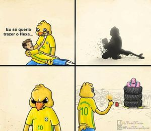

A primeira aparição deste ser mitológico se deu na Copa de 2014, quando todos os brasileiros estavam confiantes que Neymar e os outros 10 cones dariam alegria para o povo. A princípio, confiante no conhecimento de Dante sobre as estrategias e esquemas de jogo alemães, o Canarinho Pistola ainda não estava pistola, de vez em quando esboçava alguns sorrisos quando via as gostosas nas arquibancadas.
Mas isto mudou após aquela partida virar passeio, e obrigar a Rede Globo a estrear a barra de rolagem para exibir na tela os autores de todos os gols, algo até então não usado nem nas partidas das primeiras fases da Copa do Brasil, onde as principais equipes do país fazem uma sacolada de gols em equipes do interior do interior do Nordeste, que pagam seus atletas com pinga e carne seca com farinha (a de trigo, claro). Após a partida, puto com aquele resultado, o Canarinho não mais demonstrou alegria, pois o povo não estava alegre. Ele apenas apareceu nas demais partidas da Copa com aquela expressão ranzinza e cheia de ódio, que piorou após aqueles 3x0 pouco comentados sofridos pelo Brasil contra a Seleção Holandesa de Futebol.
Nas Eliminatórias para a Copa de 2018, o Canarinho foi apenas fechando cada vez mais a cara, com os resultados pífios obtidos por Dunga e seus comandados, que foram eliminados na primeira fase da Copa América Centenário no poderoso grupo contendo Peru, Equador e Haiti e não estavam sequer se classificando para a Copa da Rússia. Ele foi passar a abrir sua expressão apenas depois que Adenor assumiu e botou ordem na porra toda, mas logo fechou a cara novamente, após a eliminação para os belgas.